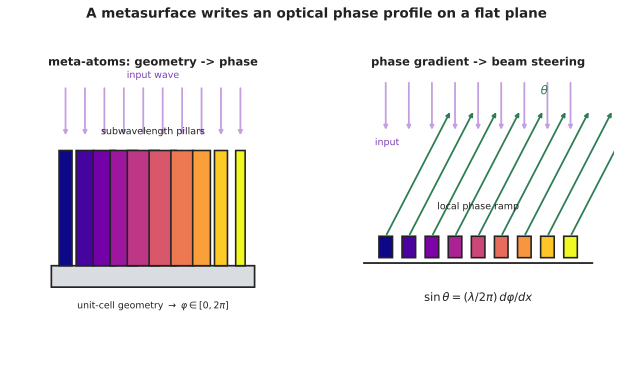

前沿 I · 超表面与超构光学
核对于 2026-07 ｜ 证据地位：物理与实验室成果【实】；大规模商业化程度【争】——本页会明确区分。 传统光学元件靠几何厚度累积相位（透镜的厚薄决定光程差）。超表面换了一种思路：用亚波长尺度的人工结构，在一个平面内直接"写入"任意相位分布。这是过去十余年光学领域最活跃的方向之一，但它的实用化程度常被夸大。

一、基本思想
传统折射透镜：
相位由厚度 \(d(r)\) 累积 → 元件必然是弯曲且有体积的。
超表面：在平面上排布亚波长尺度的散射单元（纳米柱、纳米缝、V 形天线），每个单元独立赋予局部相位、振幅与偏振响应：
要实现聚焦，只需让每点的相位满足：
于是"透镜"变成了一片厚度不到一个波长的平板。
三种主要的相位调控机制：
- 共振相位：利用散射体的谐振，相位随几何参数变化。带宽窄；
- 传播相位：把纳米柱当作截断波导，改变柱径即改变等效折射率 → 相位可覆盖 \(0\)–\(2\pi\)。这是最常用的方式；
- 几何（Pancharatnam–Berry）相位：旋转各向异性单元的方向角即产生相位。对圆偏振光，相位精确等于 \(2\times\) 旋转角——极其鲁棒（不依赖材料色散），但本质上偏振相关。
二、能做什么
- 超透镜（metalens）：平面、超薄、可与半导体工艺兼容制造；
- 消色差超透镜：用色散工程让不同波长共焦——这是超表面最受关注的成果之一，但通常以带宽窄、口径小、效率低为代价；
- 偏振复用：同一片元件对不同偏振呈现不同功能（如左旋成一个像、右旋成另一个像）——这是传统光学难以实现的；
- 涡旋光束、全息、光束整形；
- 超表面与传统光学的混合系统：用超表面校正传统镜头的像差；
- 集成到传感器上：片上偏振片阵列（第十页）、片上光谱仪、AR 波导耦合（第十六页）。
三、诚实的评估：它到底成熟到什么程度
这是本页最需要谨慎的部分——超表面的论文数量与其商业落地程度存在明显落差。
真实的困难：
① 效率。 理想仿真效率可以很高，但实际器件受制造误差、吸收、以及未被利用的衍射级次影响，尤其在大口径、大数值孔径、宽带宽同时要求时，效率往往显著低于传统折射光学。
② 色差。 消色差超透镜的成果真实，但存在一个基本的物理约束：在给定的单元厚度下，可实现的群延迟范围有限 → 口径 × 带宽 × NA 三者不可兼得。目前的消色差超透镜多为小口径、窄带宽。这是物理限制，不是工艺问题。
③ 制造。 亚波长结构需要电子束光刻或深紫外光刻（🔗 微电子站第十二页）。
- 电子束：灵活但极慢，只适合研发；
- DUV 步进曝光 + 纳米压印：可量产，但需要与半导体产线对接，且大面积均匀性是挑战；
- 成本：只有当"薄"或"集成"带来的价值超过成本时才划算。
④ 与成熟对手竞争。 传统塑料非球面透镜（第二页）极其便宜且性能优异。超表面要取代它，必须提供传统方案根本做不到的东西，而不只是"更薄一点"。
当前较可信的落点：
- 小口径、单波长或窄带的应用（3D 结构光的点阵投射器、光纤端面器件、内窥镜微型透镜）；
- 偏振与光谱调控（片上偏振成像、滤光）；
- 与传统光学混合（作为校正元件）；
- AR 波导耦合（第十六页）——这是被寄予厚望的方向。
判读此类工作的问题清单（与本课其他页一致）：
- 口径多大？（很多论文是几十微米）
- 效率多少？（含所有损耗与杂散级次）
- 带宽多宽？
- 是仿真还是实测？
- 能不能量产？
四、超构材料与更广的图景
超表面是超构材料（metamaterial）在二维的形式。三维超构材料曾引发巨大关注：
- 负折射率：同时具有负介电常数与负磁导率 → 光线向"错误"方向折射。实验上已实现，但主要在微波频段；光频段因金属损耗极大而难以实用；
- "完美透镜"：负折射平板可放大倏逝波，原理上突破衍射极限（第四页）。但损耗使其在光频段极难实现——这是一个理论优美、实践受阻的典型案例；
- 隐身斗篷：变换光学。实验演示多在微波、窄带、二维；宽带全向的可见光隐身在理论上就受因果律与色散的严格限制——这是一个被科普严重夸大的方向，值得明确指出。
共同的教训：这些方向的物理是真实的，但"损耗"与"带宽"这两个约束反复地把它们挡在实用之外。 这与本讲义库其他站的模式一致——🔗 微电子站的 TFET/NC-FET、自动化站的 \(H_\infty\)、本站第十九页的光计算，都是"原理成立但难以打败成熟对手"。
五、超表面与计算的结合
一个有前景的方向：把超表面当作"光学编码器"，与算法联合设计（承第十一页计算成像）：
- 超表面产生一个经过设计的、非常规的 PSF（例如对深度或波长高度敏感）；
- 算法从这个编码图像中解码出深度、光谱或高分辨图像；
- 端到端优化：把超表面参数与神经网络一起训练。
这可能是超表面最有价值的用法——不与传统透镜比"成像好不好"，而是提供传统光学无法提供的编码能力。
六、要点
- 超表面用亚波长单元在平面内直接写入相位，三种机制（共振、传播、几何相位）；
- 几何相位极其鲁棒但偏振相关；
- 口径 × 带宽 × NA 三者不可兼得——消色差超透镜的物理限制；
- 效率、制造成本、与廉价非球面的竞争是产业化的真实障碍；
- 负折射与隐身在光频段受损耗与带宽限制，科普夸大严重；
- 最有价值的方向可能是"超表面 + 算法"的联合编码，而非替代传统透镜。
下一页：用光做计算，以及量子光学正在打开的新可能。两个都极具诱惑，也都需要冷静的判读。